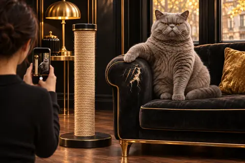

Koci Notatnik / Kocie opowieści
Koci projektant wnętrz · 5 min czytaniaPodrapałem kanapę. Teraz to kolekcja z autorskim przetarciem.
Kochani, dziś metamorfoza salonu. Przed: zwykła, droga kanapa. Po: zwykła, droga kanapa z moim podpisem. Człowiek zapytał, czy ja wiem, ile ona kosztowała. Nie wiem. Dział finansowy nie powinien obciążać artysty takimi szczegółami.

Dlaczego kot drapie meble i jak ochronić kanapę?
Drapanie to naturalna potrzeba kota: służy pielęgnacji pazurów, rozciąganiu i zostawianiu śladów zapachowych oraz wizualnych. Kanapa może przyciągać stabilnością, fakturą i położeniem. Pomaga odpowiedni drapak blisko wybranego mebla, nagradzanie jego używania i ochrona tapicerki.
Sam wybrałem tego człowieka. Sprawiał wrażenie rozsądnego: regularne dostawy jedzenia, dobre światło do zdjęć, kanapa w kolorze pasującym do mojej duszy. Dopiero później wyszło, że uważa meble za swoje. Rekrutacja nigdy nie wychwyci wszystkiego.
Najpierw zrobiłem stretching. Potem zrobiła się atmosfera.
Obudziłem się po ciężkiej drzemce. Trzy godziny na lewym boku potrafią wykończyć nawet profesjonalistę. Podszedłem do kanapy, wyciągnąłem przednie łapy i zaczepiłem pazurami o podłokietnik.
— Nie drap!
Odwróciłem głowę. Kochani, trudno prowadzić kanał o zdrowym stylu życia, kiedy personel przerywa ćwiczenia na pierwszym powtórzeniu.
Zrobiłem jeszcze jeden ruch. Tapicerka wydała dźwięk, którego człowiek najwyraźniej nie miał w pakiecie relaksacyjnym.
— Przecież kupiłem ci drapak!
Owszem. Stał za drzwiami, obok odkurzacza. Moja prywatna siłownia w strefie spotkań z potworem. Fantastyczna lokalizacja. Jeszcze tylko muzyka z suszarki i można sprzedawać karnety.
Dlaczego drapię meble? To nie recenzja Twojego gustu.
Drapanie pomaga usuwać zewnętrzne osłonki pazurów i rozciągać ciało. Pozostawiam też widoczne ślady oraz zapach z gruczołów przy opuszkach. To normalne kocie zachowanie, a nie dowód złośliwości.
W moim wydaniu: pielęgnacja, fitness i podpisanie nieruchomości podczas jednej wizyty. Człowiek do trzech takich spraw potrzebuje kalendarza i urlopu.
Kanapa jest stabilna, stoi tam, gdzie przebywam, i ma powierzchnię, o którą łatwo zahaczyć pazurami. Drapak, który się chwieje, ma niewygodną fakturę albo stoi poza moją trasą, może zwyczajnie przegrać ten konkurs.
Nie umiem przeczytać paragonu. Nie wiem, że napis „premium” miał stanowić zabezpieczenie antykocie.
Mam drapak, ale wybieram kanapę. Personel szuka usterki.
Człowiek przyniósł drapak do salonu i postawił przy podrapanym boku. Sprawdził podstawę. Stabilna. Wysokość? Mogłem porządnie się wyciągnąć. Wreszcie sprzęt dla kota, a nie model demonstracyjny dla ogórka.
Obwąchałem. Podrapałem.
— Brawo! — powiedział i podał mały smakołyk.
Zatrzymałem łapę w połowie ruchu. Chwileczkę. Za tę czynność wczoraj był wykład, a dzisiaj catering? Lokalizacja ma jednak ogromne znaczenie w biznesie.
Niektóre koty wolą drapać poziomo. Wtedy warto zaproponować stabilną matę lub kartonowy drapak. O wyborze decyduje użytkownik, nie to, czy akcesorium pasuje do zasłon.
Człowiek chciał pokazać mi łapkami, jak używać słupka. Na szczęście zrezygnował. Nie prowadź kocich łap na siłę. Zostaw przestrzeń na samodzielne poznanie nowego sprzętu.
Sesja zdjęciowa po remoncie. Współpraca: kanapa.
Usiadłem przy podłokietniku. Łapa na górze, mina światowej gwiazdy. Człowiek wyjął telefon, chyba żeby wysłać komuś zdjęcie z podpisem „zobacz, co zrobił”. Wreszcie zrozumiał strategię promocji.
Patrzyłem prosto w obiektyw. Kochani, to nie dziura. To limitowany dostęp do wnętrza mebla.
— I co ja mam teraz z tobą zrobić?
Zdjęcie pionowe, kochany. Poziome już mamy. Mówiłem, że bez szkolenia personelu marka nie urośnie.
Kiedy drapanie może oznaczać napięcie?
Wyraźny wzrost drapania, zwłaszcza po zmianach w domu lub przy konflikcie z innym kotem, może wiązać się ze stresem. Warto przyjrzeć się sytuacji i porozmawiać z weterynarzem, a w razie potrzeby z wykwalifikowanym behawiorystą. Sam nowy drapak nie rozwiąże przyczyny niepokoju.
W tej opowieści jestem bezczelnym influencerem. Prawdziwy kot nie dostarcza pisemnego uzasadnienia do każdej rysy. Obserwacja jest skuteczniejsza od przesłuchania przy kanapie.
Jak ochronić meble i zostawić kotu prawo do drapania
- Postaw stabilny drapak przy miejscu, które kot już drapie. Pionowy powinien pozwalać na pełne wyciągnięcie ciała.
- Sprawdź preferencje: słupek, mata, karton; pionowo czy poziomo. Jeden model nie odpowiada wszystkim kotom.
- Nagradzaj korzystanie z drapaka. Nie krzycz, nie strasz i nie karz za naturalną potrzebę.
- Na czas nauki zabezpiecz tapicerkę dobrze zamocowaną osłoną, bez luźnych elementów do połknięcia.
- Nie zmuszaj kota do drapania przez prowadzenie jego łap. Pozwól mu samemu sprawdzić sprzęt.
- Przy nagłej zmianie zachowania lub podejrzeniu stresu szukaj przyczyny z pomocą specjalisty.
Kanapa potrzebuje ochrony. Kot potrzebuje drapania. A człowiek potrzebuje przestać kupować drapaki do pomieszczeń, w których nikt nie bywa.